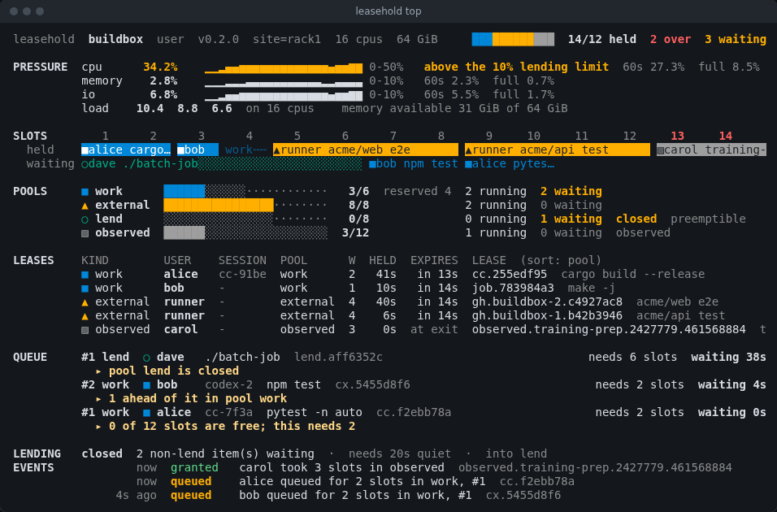
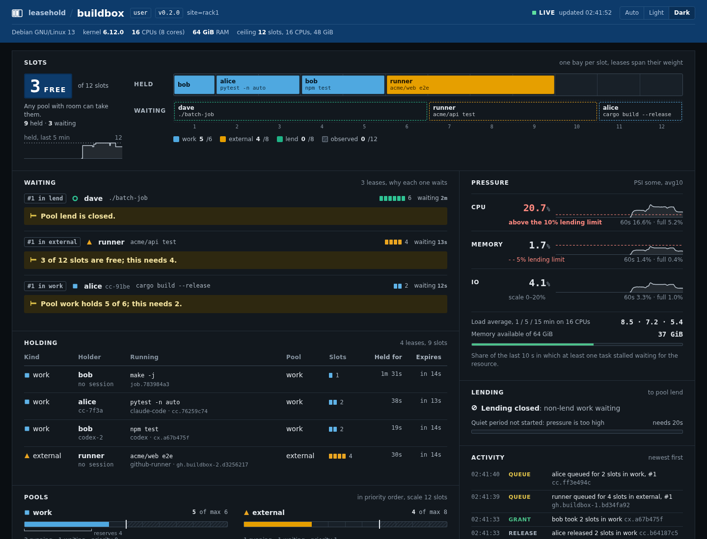
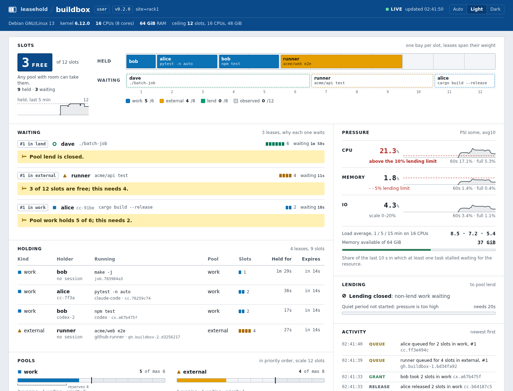

One machine, twelve slots
Illustration: a scripted sequence, not a live machineFour kinds of lease
Every lease weighs one or more slots and lives as long as its holder keeps renewing it. A holder that dies stops renewing, and its slots come back on their own.
work
The owner's own work: builds, tests, agent tool calls. Its pool can reserve slots nobody else may take.
external
Work that arrives from outside: CI runner jobs, test gates, other people's scripts.
lend
Spare capacity lent out only while the machine is idle, and revoked the moment other work needs it back.
observed
A known app someone started outside leasehold, counted against the machine so others wait for it.
Who it is for
First, one developer running several coding agents on one machine. The same daemon also serves machines that people and CI runners share.
Several coding agents
Agents start builds and test runs whenever they like. Under leasehold run, their heavy commands take turns by agent session, sized to the share they hold.
leasehold run -- claude
Test suites
A parallel test run sized for an empty machine is wrong on a busy one. A lease sizes the run to the slots it holds, and the next suite waits its turn.
leasehold hold -- pytest -n auto
CI runners on a shared box
Several self-hosted runners on one machine start their jobs together and starve each other and the people working there. Each job step holds a lease, so heavy jobs queue instead of piling up.
leasehold hold --kind external -- make test
People sharing a workstation
A lab machine or a team build box. Everyone can see what holds the machine and why their job waits, in a terminal or a browser.
leasehold top
What it changes, measured
Eight simulated agents start test runs and memory-hungry builds at random on an 8-CPU, 16 GiB machine. The same 52 jobs each time.
| Unmanaged | nice, a slice or -j4 | leasehold | |
|---|---|---|---|
| Jobs killed by the OOM killer | 0 | 5 to 9 | 0 |
git status, p95 | 981 ms | 970 to 1130 ms | 103 ms |
| How late a 10 ms sleep wakes, p99 | 25 ms | 19 to 27 ms | 3.3 ms |
| Swap read back | 2.8 GiB | 4.9 to 9.8 GiB | 0.2 GiB |
| Time for all the work | 566 s | 579 to 630 s | 848 s |
The machine stays usable and nothing is lost, at a price: the work took up to 1.5 times as long, because heavy jobs wait their turn instead of overlapping. One machine and one run per condition so far. Method, full tables and caveats.
Quickstart
Linux with Python and uv. The daemon runs as you; nothing needs root.
Install the command-line tool.
uv tool install leasehold
Set up: a config sized for this machine, your own daemon as a systemd user service, and the PATH shims. Safe to repeat;
--removeundoes it.leasehold setup
Run an agent as one session. Its heavy commands take leases; what it leaves running is stopped when it exits.
leasehold run -- claude
Watch who holds the machine, who waits and why.
leasehold top
uvx leasehold demoruns a daemon and a scripted crowd of jobs, then shows them taking turns.What it looks like
The terminal view and the web view show the same thing: who holds the machine, who waits and why, and how much pressure it is under.

media/top.png
media/ui-dark.png
media/ui-light.pngFor agents
Coding agents are the users most likely to start three builds at once. leasehold meets them where they already run commands.
Claude Code plugin
Takes a lease around an agent's heavy commands and labels it with the agent session, so one person's sessions take turns with each other as well as with everyone else.
PATH shims
Stand-ins for build and test commands that run the real command under a lease. Agents and scripts get turn-taking without changing how they call their tools.
MCP server
Lets an agent ask how busy the machine is, why its work is waiting, and hold a lease, through MCP tools instead of parsing terminal output.
Jobserver sizing
A lease can size a GNU make jobserver, so make -j and other jobserver-aware tools run as many jobs as the lease holds slots, not as many as the machine has cores.
Examples
Each one is a short, runnable setup in the repository.
- GitHub runnerSelf-hosted runners on one box, each job step holding an
externallease weighted by how heavy it is. - Test suite and
make -jA test run and a parallel build sized to the slots they hold. - Several agents, fairlyTwo users and four agent sessions on one machine, taking turns per user and then per session.
- Lending and revocationAn idle machine lends slots; other work arrives and the lent lease is revoked.
- Library-only useThe admission policy as a Python library, with no daemon.
- Observed appsA rule that counts a known app started outside leasehold, so others wait while it runs.
How it compares
Most of these are good tools that solve a nearby problem. Pick the one whose shape fits yours.
| Tool | What it does | Next to leasehold |
|---|---|---|
| flock, semutil-linux, GNU parallel | One lock file, or a counting semaphore of N slots, around a command. | No weights, users, sessions or load. Enough for one person and one kind of job; leasehold adds turn-taking across users and weighted slots. |
| pueue, task-spooler, nq | Hand a command to a queue that runs it later, with a limit on how many run at once. | They own and run the job; leasehold only admits it, so the job keeps running in your shell, CI step or agent. Their queues are per user, not shared fairly across users. |
| consul lock | A lock or semaphore held in a Consul cluster's key-value store. | Spans many machines but needs a Consul cluster, and knows nothing about the machine's load. |
| systemd slices | cgroup weights and limits for the CPU, memory and IO of running processes. | Shares resources among what already runs; never makes work wait to start. They combine well: slices shape running work, leasehold decides when it starts. |
| Slurm, HTCondor, Nomad | Cluster schedulers: submit jobs, place them on nodes, account for use. | Built for many machines and much more to run. leasehold suits the one shared box where a cluster scheduler would be out of proportion. |
| agent-semaphore | Coordinates parallel coding agents on one repository: claims on code scopes, conflict warnings, a landing queue. | About who edits and merges what, not the machine: it does not limit how many builds and test runs share the CPUs and memory. The two fit together. |
| stevesystem-wide jobserver | One GNU make jobserver shared by every jobserver-aware build on the machine. | Reaches only tools that speak the jobserver protocol, with no users, pools or expiry. leasehold can size a jobserver from a lease instead. |
| GitHub Actions concurrency | At most one running job per concurrency group in a repository or organisation. | Knows workflows, not the machine: it cannot see other users, agents or the load on a self-hosted runner's box. |
What it is not
Not a sandbox
Where a systemd user manager is available, each command runs in a scope weighted to its lease, with soft memory limits (enforced). Elsewhere leases and sizing still apply, but a command that ignores its job count is not held back (advisory). leasehold doctor says which.
Not a scheduler
It never runs, places or retries your jobs. It says when they may start and how many slots they may hold; your shell, CI runner or agent runs them.
One machine only
One daemon per machine, with no cluster, no federation and no network of daemons. Several machines means several independent daemons.
Linux only
It reads pressure stall information from /proc/pressure and works with cgroup v2. It does not run on macOS or Windows.
Reference
The full reference, configuration and API live in the repository: README and the reference.
leasehold setup- Config, your own daemon and the PATH shims, in one step.
leasehold run -- <agent>- Run an agent as one session: its heavy commands leased, its leftovers stopped.
leasehold hold -- <cmd>- Wait for a lease, run the command while holding it, release it on exit.
leasehold top- Live terminal view of slots, pools, leases and the queue.
leasehold ui- Print a local link to the web view, with its access token.
leasehold demo- Run a daemon and a scripted crowd of jobs to watch them take turns.